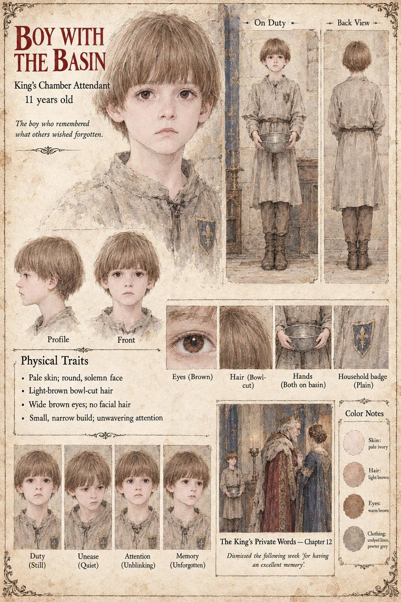

Boy with the Basin
King's chamber attendant · unnamed · 11 years old
The only witness to the one conversation in the case that nobody has ever been able to report. On the twenty-first of Brayen King Theudebald speaks to his daughter alone, after the brother has gone, in the last of the light and with the Chancellor sent to the corridor; the room has no door, and the only person in it besides the two of them is a boy of eleven who has been set to hold a basin. It is reported that the King asked her whether she wanted it, and that she said she did not. It is reported that he laughed, which cost him a fit of coughing so long that the physician had to be called in from the passage. The boy is dismissed from the service in the following week for having an excellent memory.
The manuscript gives him an age, a basin and a dismissal, and does not say what he remembered or where he went. Another boy of eleven, in a different chapter, polishes the Duke's eighty-eight swords every morning with a cloth at Tarnhall and is forbidden to hurry; the page does not take him to be the same boy. The sheet's pale, round, solemn face, light-brown bowl-cut, wide brown eyes, small narrow build and undyed linen tunic with a plain household badge in blue are its own, as are its tagline, The boy who remembered what others wished forgotten, and its panel The King's Private Words; its expression panels run Duty, Unease, Attention and Memory.
“for having an excellent memory”